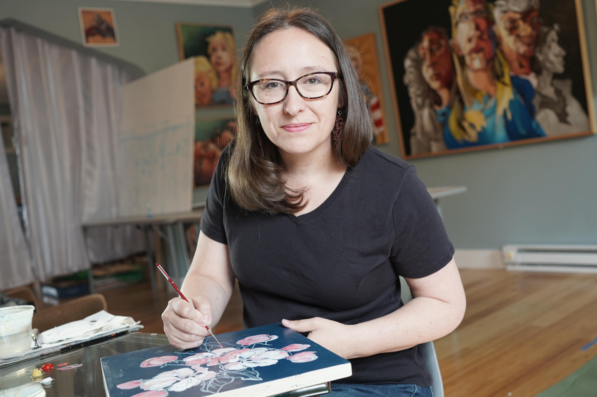

Biography:
Maureen O’Keefe is a portrait, figure, and floral painter living and working in mid-western Ohio. The process for Maureen's current body of work involves a return to the blind-contour drawing that is taught in beginning art classes. The artist never lifts the pencil from the surface and never looks at the drawing; only at the subject. Once a line drawing is finished, she has a template for a finished work. Her work investigates identities and belonging, often in a religious or spiritual context.
Maureen received her BFA in Fine Art from the Savannah College of Art and Design in 2005. She has shown work in seven states in both group and solo exhibitions. Maureen is a recipient of the Ohio Arts Council Individual Excellence Award for FY2019. She has taught drawing, painting, and design courses at Edison State Community College since 2009.
Maureen O’Keefe is a portrait, figure, and floral painter living and working in mid-western Ohio. The process for Maureen's current body of work involves a return to the blind-contour drawing that is taught in beginning art classes. The artist never lifts the pencil from the surface and never looks at the drawing; only at the subject. Once a line drawing is finished, she has a template for a finished work. Her work investigates identities and belonging, often in a religious or spiritual context.
Maureen received her BFA in Fine Art from the Savannah College of Art and Design in 2005. She has shown work in seven states in both group and solo exhibitions. Maureen is a recipient of the Ohio Arts Council Individual Excellence Award for FY2019. She has taught drawing, painting, and design courses at Edison State Community College since 2009.
Awards:
2019 - Individual Excellence Award , Ohio Arts Council
The Individual Excellence Awards program recognizes outstanding accomplishments by artists in a variety of disciplines.
2019 - Individual Excellence Award , Ohio Arts Council
The Individual Excellence Awards program recognizes outstanding accomplishments by artists in a variety of disciplines.
Exhibitions:
2021 - Upcoming Body Of Work (Solo)
Dayton Society of Artists, Dayton, OH
This pop up exhibition will run March 5-13, 2021